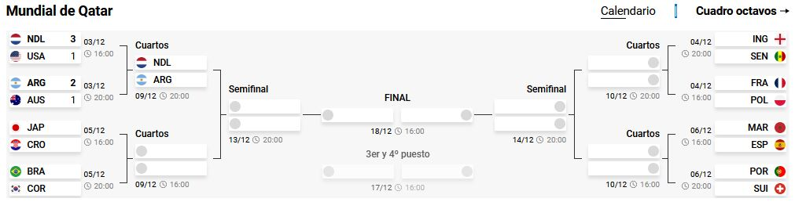
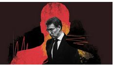
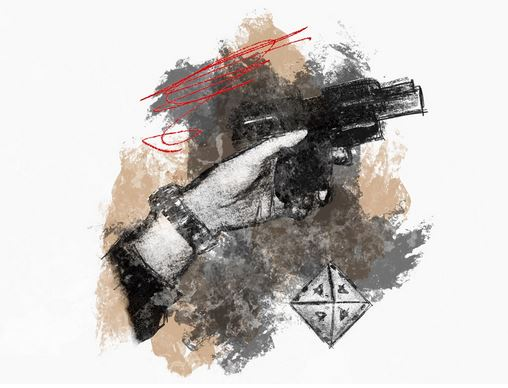
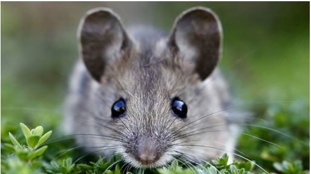
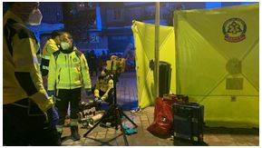
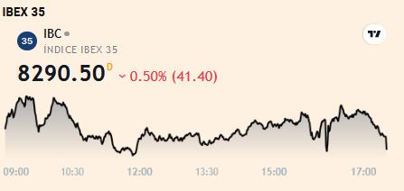
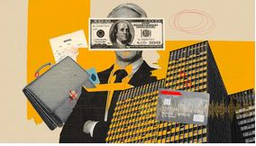
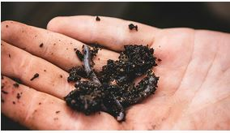
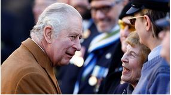
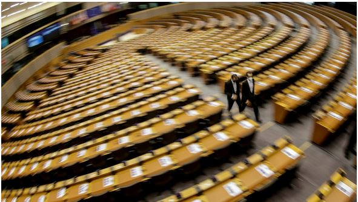

Argentina-Australia:Messi guía a la albiceleste a cuartos de final

La Policía sospecha que las cartas incendiarias habrían sido enviadas desde Valladolid
Moscú amenaza con cortar el envío de Petróleo a Europa en un mes
Un aeropuerto de provincias clave para sostener el esfuerzo occidental
Messi guía a Argentina a los cuartos del Mundial en una exhibición total contra Australia
MUNDIAL QATAR 2022
Mucho Van Gaal, poco 'soccer': Depay entierra el sueño americano y Países Bajos está en cuartos
Puñetazos, persecuciones y "unos ladrones hijos de...": el desesperado grito de dolor de Uruguay
Lo que hace Luis Enrique para sacar a España del catastrofismo en el Mundial de Qatar
España

EC EXCLUSIVO
El PP aspira con VOX al 46% de los votos para ganar a Pedro Sánchez
Podemos declara la guerra a Batet tras la polémica del sólo sí es sí
EC EXCLUSIVO
El TC se prepara para el examen a Campo y Díaz si el CPGJ alarga el bloqueo
EC EXCLUSIVO
Matacán|El PSOE no se rompe: las siglas aguantan la disidencia
EC EXCLUSIVO
Las empresas advierten ya a sus inversores del impacto por el impuesto a las grandes fortunas
Firmas en busca de financiación alternativa en plena alza de tipos avisan de las consecuencias que podrían tener sus potenciales inversores
Juan Cruz Peña
EC EXCLUSIVO
El envite perdido por la abogada estrella de BBVA en el caso Villarejo
Jorge Zuloaga
EC EXCLUSIVO
Inquietud en el IBEX por la norma que ampliará los términos de exigencia
Irene Cortés
EMPRESAS
EC EXCLUSIVO
Justicia vuelve a bloquear la ley de familias de Ione Belarra alegando errores técnicos
Jorge Zuloaga
Rusia investiga explosiones en dos aeródromos militares, causando tres muertes
EC | 14:26
EC EXCLUSIVO
IBEX INSIDER| Lo que San José, Calpers y 'Corcos' no te han contado del capital riesgo
ECONOMÍA
EC EXCLUSIVO
Quiebra la empresa de gafas que iba a impulsar el deporte y que fichó a Denis Suárez y Espargaró
Carlos Rodríguez
La jueza exige ya documentos de los espionajes y la fiesta de Salobreña
J.M Olmo / A. Requeijo
Starwood limita como Blackstone y limita reembolsos en su fondo estrella
R.U. | 14:32
Varios consejeros del BCE prefieren ralentizar las subidas de tipos en diciembre
E.C | 14:13
SOCIEDAD
El Supremo reactiva las oposiciones a policía nacional y carga contra sus responsables
Pablo Gabilondo | 14:32
EC EXCLUSIVO
De 'enfant terrible' a barón mimado por Sánchez: las victorias de Emiliano García-Page
Lourdes Barragán
El pucherazo del vicepresidente de Lambán complica el camino electoral
Álvaro Sierra.Zaragoza

Muerte en el salvaje Ourense: ¿quién mató al agente Celso?
Alejandro Requeijo / Rocío Márquez/ Marina G.Ortega / Luis Rodríguez
OPINIÓN
Rubén Amón
EC EXCLUSIVO
PS impone el régimen del terror en el PSOE
El escarmiento público a Lambán y la sumisión de los diputados exponen la disciplina extremista con que Sánchez
Javier Caraballo
EC EXCLUSIVO
Sobre la tendencia decreciente del PP en las encuestas
Los trasvases de electores desde PSOE y Vox se están estrechando al mismo tiempo. Por distintos motivos, los dos rivales del PP vienen recuperando terreno
Josep Martí Blach
EC EXCLUSIVO
¿Y a ti qué te importa?
La machacona campaña del Ministerio de Derechos Sociales y Agenda 2030 contra el maltrato infantil es enseñarnos una nueva cosa que hacemos mal: educar a los hijos
Nacho Cardero
EC EXCLUSIVO
Las cinco bazas de Sánchez para ganar en mayo
Los barones socialistas advierten recurrentemente al Gobierno central de que cada vez que abre la boca, sube el pan en sus respectivas CCAA

EC EXCLUSIVO
Mala fama| El ratoncito Pérez y el hundimiento de la civilización occidental
Alberto Olmos| 14:21
Todos creemos firmemente en aquella ficción que hace nuestra vida más fácil.¿Tú compras los regalos por la mañana me preguntó mi hija?
EC jurídico
EC EXCLUSIVO
"Confío al 100% en mis socios de China, les enviaría mi mejor cliente"
Pedro del Rosal
EC EXCLUSIVO
Turno de oficio forzoso:que hay detrás de la decisión del Colegio de Huesca
Irene Cortés
EC EXCLUSIVO
Fieldfhisher aprueba una subida salarial del 12% ante la fuga de talento
P. del Rosal
EC EXCLUSIVO
La firma de abogados de élite a la carta quiere ingresar 5 M en 2025
I. Cortés
Comunidades Autónomas
Madrid
Andalucía
Comunidad Valenciana
Cataluña
Aragón
MADRID

El PSOE expulsa a Joaquín Leguina por declarar su apoyo a Isabel Díaz Ayuso
EC | 46
EC EXCLUSIVO
No es No| ¿Es Madrid el infierno de la política?
Rubén Amón
ANDALUCÍA
Por las esquinas| Reyes Magos por adelantado en Andalucía
José Luis Sosa
Narcos destruyen a tiros dos estaciones de vigilancia en la costa de Huelva para colar alijos
M.Rosa Font.Huelva
Cotizalia
The Wall Sreet Journal

Empresas
La banca suiza, investigada por limitar el sueldo de los empleados junior
Decenas de bancos suizos se enfrentan a una investigación preliminar del organismo nacional de control
Cotizalia | 11:46
Crisis Energética
Putin baraja tres posibles respuestas al tope de 60 dólares al petróleo de las grandes potencias
Cotizalia | 10:40
Criptomonedas
Volatilidad en el token de Mundo Crypto: de volar un 1.000% a caer un 50% desde máximos
Carlos Rodríguez | 21:46
Renta Fija
El Tesoro vende 3.776 M en letras tras alcanzar rentabilidades récord desde 2012 en máximos
Cotizalia | 12:53
Tecnológicas
Alivio para Apple: la mayor fábrica china de iPhone pone fin a 56 días de confinamiento
Cotizalia | 10:11
Economía
La producción industrial modera su crecimiento en octubre al 2,2% y son seis meses de ascensos
Cotizalia | 10:11
Mercados
¿Comprar oro en un cajero automático? La India abre el primero que expende el metal
Cotizalia | 10:11
ANÁLISIS TÉCNICO Opinión Pues sí,parece la hora de la verdad (Calvo Doblado)
Nuestra Selección
NACIONAL
EC EXCLUSIVO
El exviceconsejero de Melilla que festeja con Mohamed VI la victoria de Marruecos

COMUNICACIÓN
De rubiales al rey, los mejores pódcast sobre políticos y empresarios corruptos
EC

TEKNAUTAS
Este hombre 'trajo' una superfábrica de chips a la España de los 80. Ahora le piden repetir la hazaña
M. Macloghin
NOVACENO
La nueva batería que puede cambiar la industria para siempre
Jesús García

VANITATIS
La Nochevieja truncada del rey Felipe: viaje oficial y Año Nuevo lejos de doña Letizia, Leonor y Sofía
A. Rodríguez
Más Noticias
Estreptococo A: qué saben y recomiendan los pediatras sobre esta nueva alerta
Ángeles Gómez | 18:19
Una senadora de Estados Unidos se registra como independiente
EC | 17:28
La Policía identifica al 'niño de la caja' de EEUU, que fue hallado muerto hace 65 años
EC | 11:12
Me han hecho un contrato hasta junio de 2023 para luego destinarlo a turístico
EC
Salud y Alimentación
Estos son los alimentos que contienen gluten y aún los desconoces
No todo lo que reluce es oro. Existen muchos productos que esconden esta proteína. La Federación de Asociaciones de Celiacos de España nos indica cuáles y las medidas que se deben adoptar para evitar problemas
Juan Montagu
Tres cambios en tu vida recomendados por Harvard para evitar el cáncer de colon
A. Gómez
Así puedes eliminar los mocos de la garganta de una vez por todas
Alimente
Internacional
Redada en Bruselas por una supuesta trama de sobornos para limpiar la imagen de Qatar
La justicia belga ha lanzado una serie de registros por una presunta organización criminal con la que Qatar sobornaba a miembros de la Eurocámara. De momento hay 5 arrestados
Nacho Alarcón.Bruselas

El país que devora presidentes: ¿cuánto durará Dina Boluarte al frente de Perú
Héctor Estepa
EC EXCLUSIVO
Jersón, de ciudad liberada a víctima de la artillería: "Creen que seremos como Mariúpol"
Alicia Alamillos
¿Planeas ir a Bali con tu pareja? Cuando entre en vigor esta ley, más os vale estar casados